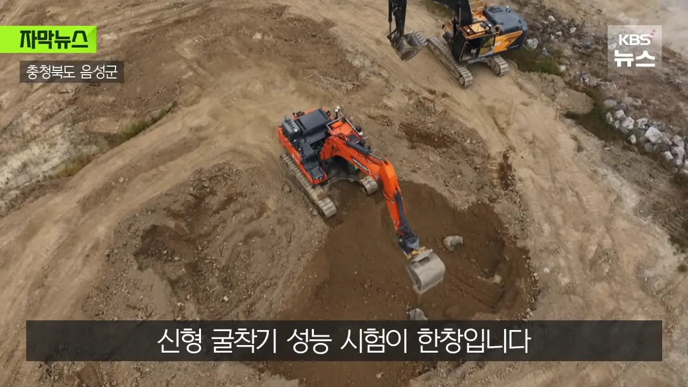
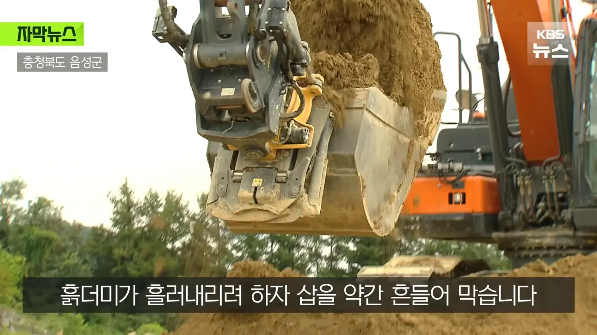
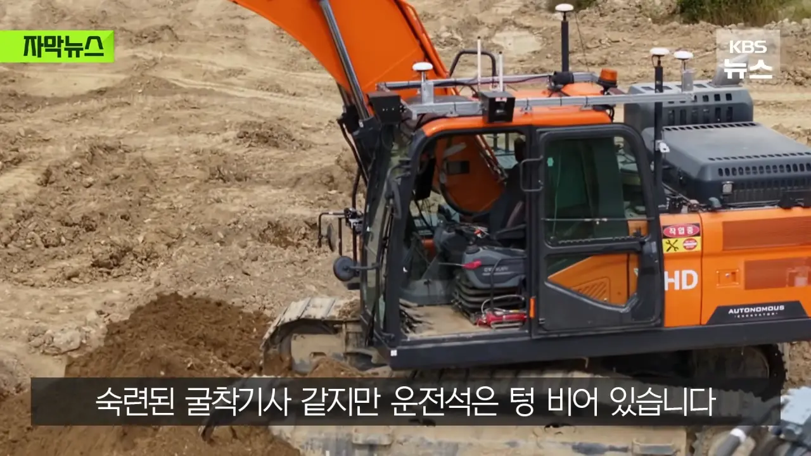
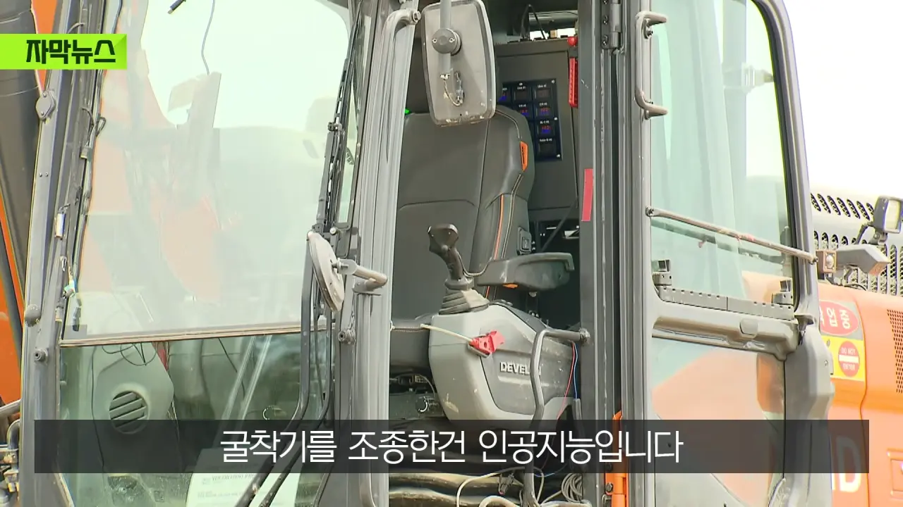
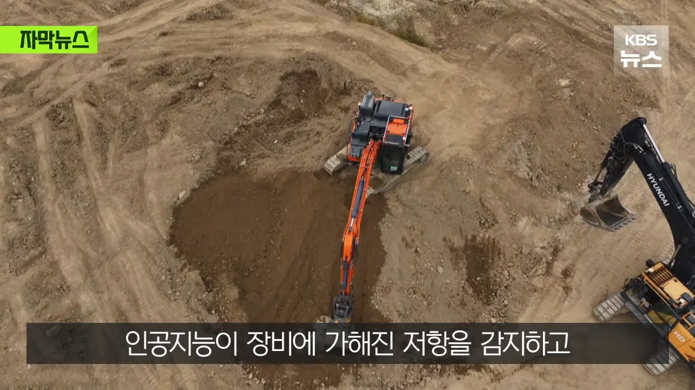
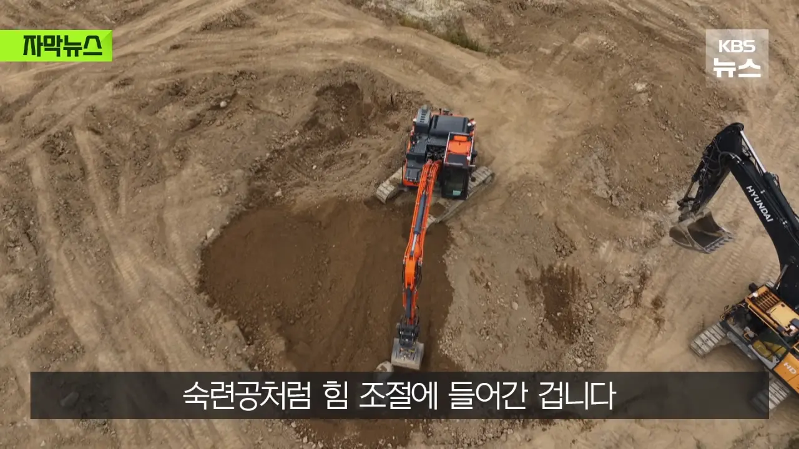
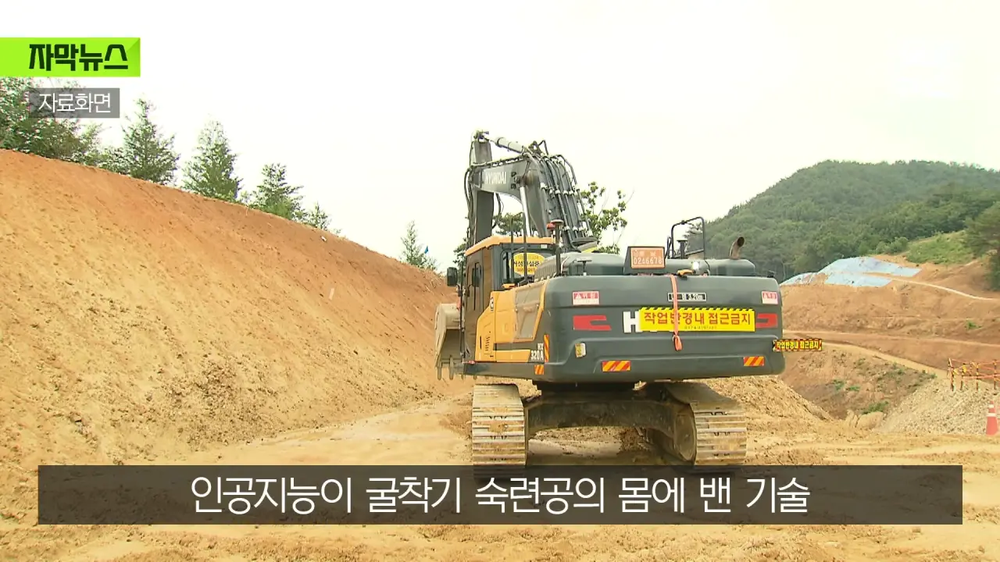
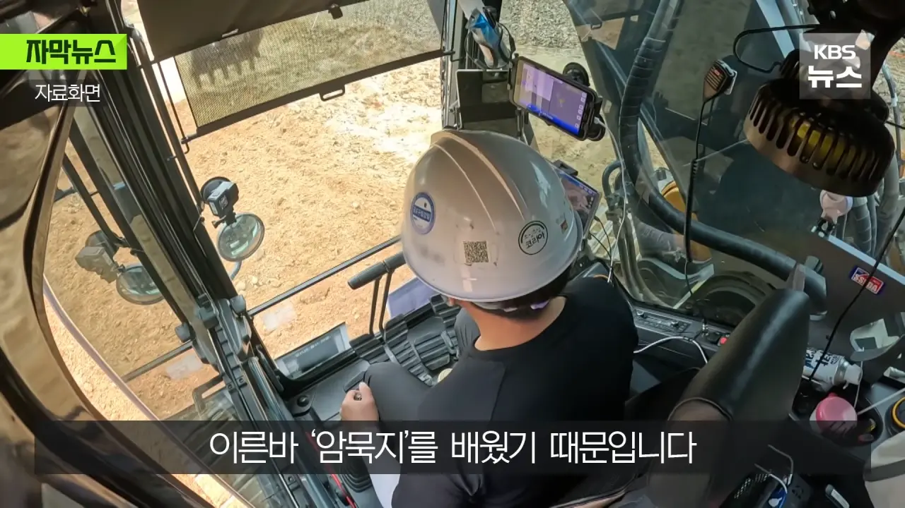
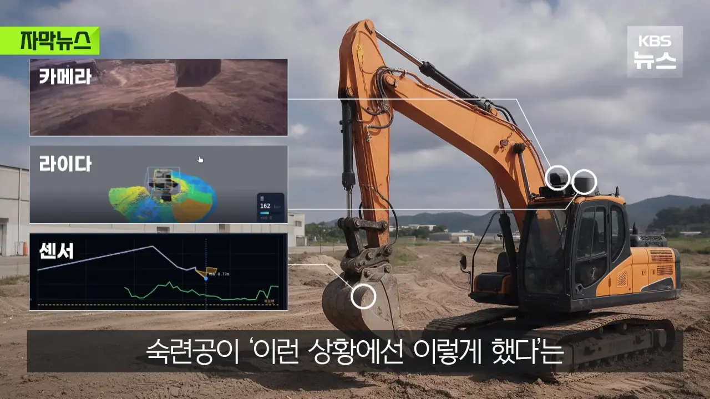
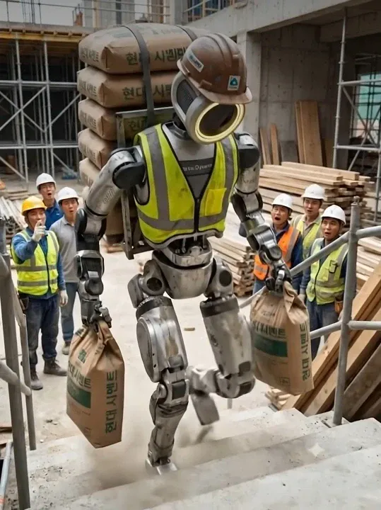

매트릭스 세계관이랑 겹치는데
ai 발전속도 유추가 안됨? gpt 나온게 불과 3~4년 전임. 그럼 5년 안에는? 너네들 직업 대부분 대체될 예정ㅋㅋㅋ
부럽다 개백수.
인간 마음에 안들면 깔아뭉개기 가능
노가다랑 용접은 안될줄 알았는데 진짜 말도 안되네
기술의 발전을 이상하게 우습게 보는 경향이 있는거 같음
요즘은 우습다기보다 두려워하지 않나
대부분 그렇긴한데 유독 인력이나 경력기반의 업계가 유독 좀 심한거 같음
'백날 AI가 발전해봐야 30년경력자 발끝에나 따라가겠냐 이거야~~~'
이런느낌?
못배워서 그럼 ㅋ 무지하면 용감하지
아는만큼 보인다고 물론 100% 대체는 당장어렵겠지만 맘먹고하면 시간이 필요해서그렇지 가능함. 단지 로봇보다 사람이 저렴해서 사람이 쓰일 수 있을것이라고 생각이듬
100퍼 대체됨 특히 저쪽은 계속 고용이 아니라 이제 더이상 써주는 곳이 없어져버림
처음에는 로봇이 안좋아서 야 저거 에케쓰냐ㅋㅋㅋ하다가 한 5년지나면 아무곳도 자기 받아주는 곳 없게됨
뽀꿀롬보다 김씨아저씨 자리부터 뺏기겄다...
야리끼리!
도입 초창기에는 백호 자빠져있는 꼬라지 자주 보겠다 ㅋㅋㅋㅋㅋㅋㅋ
소장님~ N번 빽호 넘어갔심다~
기술적인 문제는 고민거리가 아님. 윌스미스 스파게티 쳐먹던 짤이 언제냐. 결국은 얼마나 많은 돈이 지속적으로 투자되냐의 싸움.
보통 이런 건, 금방 된다는 사람과 늦게 된다는 사람의 중간이 맞긴해.
금방 된다는 사람은, 빠르게 되는 이유 위주로 알고 있고, 늦게 된다는 사람은 늦는 이유 위주로 알고 있어서, 그 중간이 밸런스가 맞음.
개추
현차노조도 로봇도입시 기본급 보장 이런거 협의했는데 조만간이지
도로나 신규 현장같은 지장물 많은 곳에선 절대 못쓰고
모래 골재 폐기물 상하차 하는곳에선 쓸만할듯
러다이크 운동 가즈아
나는 전혀 다른 업종이지만, 타일하고 굴삭기는 좋게안봄
자기 밥그릇 지키는건 좋은데 텃세가 심해도 너무 심하고
착취가 당연한 업계임. 굴삭기보조는 급여도 없더라.
곰빠으 노가다 하실분만요.
레미탈.65푸대. 9시부터시작.
야리끼리.함니다. 식대.담베값 지원됨니다.만은
지원바람니다.
숙련자는. 30십만원 일당임니다. 장소는.
스타렉스. 타고 이동하오니 얀락바람니다.
장애인. 몸아푼분은 좨송함니다.
건장한분만요. 여자도. 되지만. 짹짹거리면.
두들겨팸니다.
현장.해보신 분만요.
댓글 바람니다.
몇번을 읽어도 명문이다
일부 현장에만 사용할수있다고 걱정없다는 노가다꾼들있는데 저렇게 하나뚤씩 현장들이 ai로 대체되면 남은 현장 경쟁이 더 치열해질거임. 경쟁이 치열해 지면 당연히 단가는 떨어질거고
맞음 이게문젠데 다들 본인은상관없다고함ㅋㅋ
"데이터에 따르면 숙련공은 이런 상황에서 뿌레카를 긴빠이쳐서 당근에 올렸다."
지리네... 안위험한곳이 없구나
일단 빨리 트럭부터
개발자 하다가 건강때문에 쉬고 용접 하는데 여기도네...
하
지게차나 굴착기같이 운전하는분야는 전부 대체되긴하겟다
앉아서 하는건 곧 끝난다니까
이미 노동자들 중에 가장 힘이 약한 청소분야에서 먼저 투입되기 시작했음. 지금은 어설퍼도 계속 학습하다보면 인간 대체 가능할때까지 2년도 안남았다고 봄. 사실 현대차같은 컨베이어 시스템의 제조업 노동자들 대체하기가 제일 쉬운데 노조힘이 쎄서 가장 늦게 대체되겠지.
나는 요즘에 몸쓰는일 한다고 안심하고 있는 사람들이 제일 이해가 안감
어쨌든 빠른 기술 발전은 난 환영임
언젠간 타워 크레인 대신 드론으로 올리는 날도 올라나
포대 옮기는건 같은 기초적인 일만 살아남겠네 ㅋㅋㅋ
ㄴㄴ 그런 일들이 먼저 대체될거임 저런 기계 쓰는 건 단가가 쌘만큼 기존에 일하던 사람들이 반발해서
들어오는 걸 최대한 막을 거라..